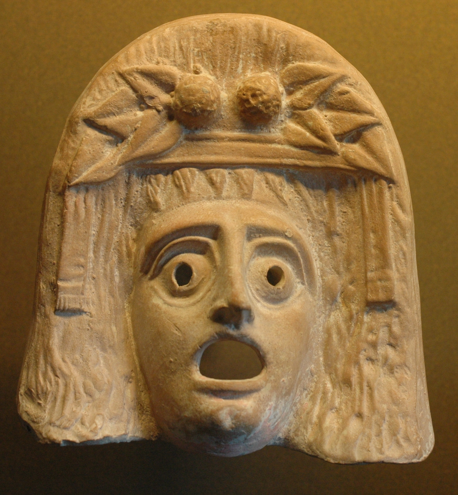
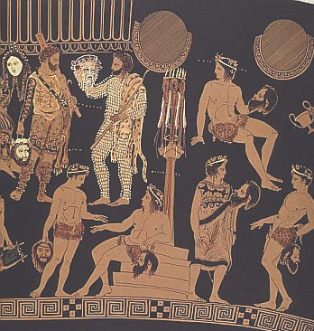

clicca sui punti informazione all'interno della pianta del teatro per scoprirne di più
L’edificio teatrale, situato ai piedi dell’acropoli, era un luogo sacro all’interno del quale si svolgevano le cerimonie e gli agoni teatrali delle grandi Dionisie. In base a documentazioni tramandate sul teatro, possiamo farci una idea sulle strutture architettoniche dell’edificio del V secolo a.C. e di quello in cui, dopo una importante ristrutturazione nella seconda metà del IV sec a.C., si svolgevano commedie e tragedie. In un primo momento completamente in legno, il Teatro di Dioniso fu ristrutturato per mano di Pericle nel 445 a.C., il quale aveva avviato un grandioso progetto edilizio facendo costruire anche l’Odeon e un nuovo tempio dedicato a Dioniso. Una seconda radicale ristrutturazione del teatro ebbe luogo tra il 338 e il 326 a.C. su iniziativa di Licurgo. Il teatro assunse gradualmente un aspetto sempre più simile alla fisionomia che possiede oggi. L’edificio era completamente in pietra e la cavea conteneva all’incirca 15 000 persone. La skenè, prima in legno, fu poi sostituita da una in pietra, la quale possedeva tre ingressi. La piattaforma scenica, il logheion, aumentò le proprie dimensioni arrivando a misurare 20 metri per 5 e, ai lati, era delimitata da avancorpi a forma di colonnato. Nei secoli successivi il teatro venne utilizzato almeno fino al periodo dell’impero romano ma cadde in disuso e fu ricoperto dalla vegetazione. Venne riportato alla luce grazie agli scavi dell’archeologo W.Dorpfeld tra il 1882 e il 1895. Il teatro, a partire dalla seconda metà del V secolo a.C., era dotato di apparati scenici (invenzione attribuibile a Sofocle) costituiti da pannelli di legno, sui quali venivano dipinte ambientazioni. Non mancava durante le rappresentazioni l’utilizzo di macchine sceniche, tra le quali il brontèion (macchina del tuono) e la mechanè(macchina del volo), utilizzate per sorprendere ed emozionare il pubblico. Elementi fondamentali e caratteristici del teatro greco erano le maschere che venivano utilizzate dagli attori. Nel V secolo a.C. le maschere venivano create in lino, sughero o in legno. Esse erano molto diverse rispetto a quelle in argilla o marmo ritrovate durante alcuni scavi archeologici, le quali probabilmente erano delle copie differenti dalle originali visto che ricoprivano solo il volto mentre quelle utilizzate a teatro nascondevano l’intera testa.
Esse servivano ad assolvere problemi pratici. Nelle tragedie gli attori parlanti potevano essere solamente tre, mentre nelle commedie quattro. Con l’utilizzo di maschere differenti un unico attore parlante poteva ricoprire più ruoli. Gli Attori (ruolo affidato solo a uomini) attraverso questa tipologia di stratagemma potevano interpretare anche parti femminili. Altra funzione che le maschere assolvevano era quella di permettere al pubblico un facile riconoscimento dei personaggi delle tragedie, i personaggi possedevano propri connotati, attraverso il colore dei capelli ed i costumi scenici indossati, venivano immediatamente riconosciuti. Alcuni studiosi ipotizzano inoltre, che le maschere facessero da cassa di risonanza in modo tale da permettere anche al pubblico più distante nel teatro di sentire i dialoghi. Importante testimonianza riguardante l’uso di maschere e costumi a teatro da parte degli attori sono i dipinti sui vasi greci riportati alla luce da scavi archeologici.
maschera di teatro del II secolo a.C., Atene, Museo archeologico Nazionale.
maschera di Dioniso del II secolo a.C., Parigi, Louvre.
Attori del dramma satiresco con maschere e costumi, dipinti su un cratere attico a figure rosse: particolare con il Papposileno, personaggio semiumano del corteo dionisiaco, dal caratteristico costume peloso; Pittore di Pronomos, fine del V secolo a.C.; da Ruvo; Napoli, Museo Archeologico Nazionale.